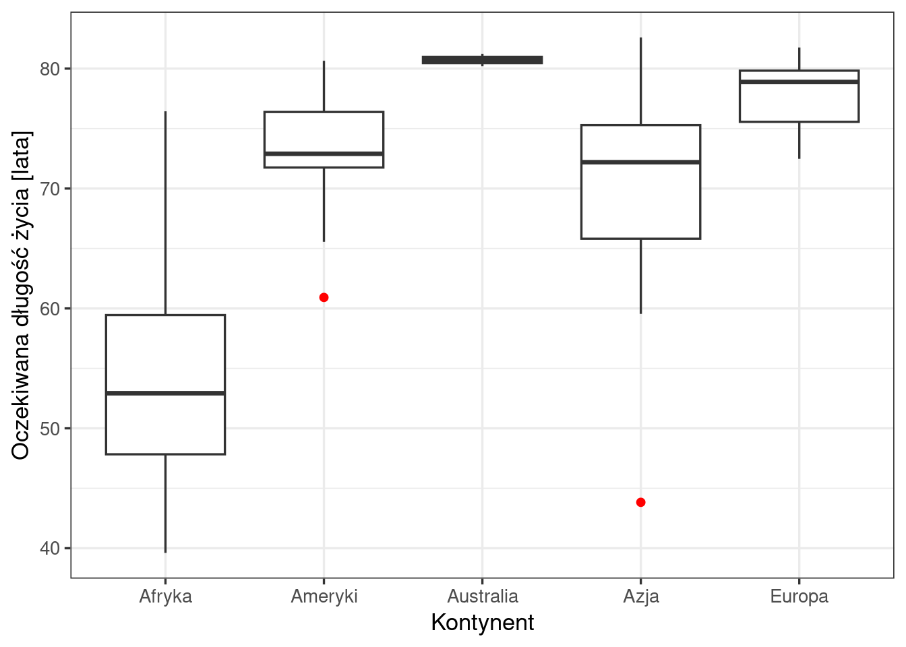

# wczytanie pakietu tidyverse: zestawu pakietów do przetwarzania danych (dplyr)
# i tworzenia wykresów (ggplot2)
library(tidyverse)
# wczytanie pliku CSV i zapisanie tabeli jako obiektu o nazwie dane
dane <- read.csv("dane/gapminder_regions.csv", encoding = "UTF-8")
# zamiana wszystkich kolumn tekstowych na zmienne typu factor (zmienne jakościowe)
dane <- dane |>
mutate(across(where(is.character), as.factor))21 Oczekiwana długość życia na świecie w 2007 roku
Jak czytać ten rozdział
Rozdział pokazuje na przykładzie, jak wykonuje się obliczenia dla poszczególnych etapów raportu i jak interpretuje się uzyskane wyniki. Układ rozdziału służy nauce i różni się od typowej konstrukcji raportu: każda sekcja składa się z kodu R z wynikiem, interpretacji — tekstu, który wchodzi do raportu — oraz części Obliczenia w R, która wyjaśnia działanie kodu.
Sekcja Sekcja 21.8 wskazuje, które elementy rozdziału tworzą raport, a plik kod/21_raport.qmd zawiera je w układzie raportu, który można otworzyć i wyrenderować. Kompletny przykład raportu przedstawia Rozdział 23.
21.1 Wprowadzenie
Raport opisuje oczekiwaną długość życia w chwili urodzenia w 142 krajach świata w 2007 roku: jej poziom na świecie, różnice między kontynentami i wewnątrz nich oraz rozmieszczenie przestrzenne.
Raport odpowiada na pytania badawcze:
- Jaka była typowa oczekiwana długość życia na świecie w 2007 roku? (Sekcja 21.3)
- Czy oczekiwana długość życia różniła się między kontynentami i jak była zróżnicowana wewnątrz nich? (Sekcja 21.4)
- Jak rozmieszczone są przestrzennie kraje o krótkiej i długiej oczekiwanej długości życia? (Sekcja 21.5)
21.2 Dane
21.2.1 Źródło i zakres
Zbiór gapminder_regions.csv zawiera dane Gapminder (https://www.gapminder.org/data/), dostępne w R w pakiecie gapminder (licencja CC0). Zbiór obejmuje 142 kraje i 12 lat: od 1952 do 2007 roku, co 5 lat. Raport wykorzystuje dane z 2007 roku. W raporcie wykorzystywane są kolumny: lifeExp (badana cecha), kontynent (podział na grupy), kraj, year (wybór roku) i Kod (połączenie z mapą).
21.2.2 Przygotowanie danych
# wybrany rok; lata z danych: od 1952 do 2007, co 5 lat
wybrany_rok <- 2007
# wybór obserwacji z wybranego roku i zapisanie ich jako nowego obiektu dane2007
dane2007 <- dane |>
filter(year == wybrany_rok)Obliczenia w R.
read.csv()wczytuje plik tekstowy, w którym wartości oddzielone są przecinkami, i zwraca tabelę. Znak<-zapisuje ją jako obiekt o nazwiedane.mutate(across(where(is.character), as.factor))zamienia typ kolumn:where(is.character)wybiera wszystkie kolumny tekstowe,as.factorzamienia każdą z nich na factor, czyli typ zmiennej, którym R zapisuje zmienne jakościowe, amutate()zapisuje zmienione kolumny w tabeli.filter()z pakietudplyrpozostawia w tabeli wyłącznie wiersze spełniające podany warunek. Warunekyear == wybrany_rokjest spełniony w wierszach, w których kolumnayearma wartość zapisaną w obiekciewybrany_rok, tu: 2007. Podwójny znak==oznacza porównanie („czy jest równe”); pojedynczy znak=służy w R do nadawania wartości argumentom funkcji.- Wynik zostaje zapisany jako nowy obiekt
dane2007. Obiektdanez wszystkimi latami pozostaje bez zmian.
21.3 Oczekiwana długość życia na świecie
# liczba krajów na każdym kontynencie w 2007 roku
summary(dane2007$kontynent) Afryka Ameryki Australia Azja Europa
52 25 2 34 29 # podstawowe statystyki oczekiwanej długości życia w 2007 roku
summary(dane2007$lifeExp) Min. 1st Qu. Median Mean 3rd Qu. Max.
39.61 57.16 71.94 67.01 76.41 82.60 Interpretacja. W 2007 roku zbiór obejmuje 142 kraje: 52 w Afryce, 34 w Azji, 29 w Europie, 25 w Amerykach i 2 w grupie „Australia” (Australia i Nowa Zelandia). Oczekiwana długość życia w chwili urodzenia mieściła się w przedziale od 39,6 do 82,6 roku (rozstęp 43 lata). Średnia dla 142 krajów wynosiła 67,0 roku. Mediana (71,9 roku) wskazuje, że w połowie krajów oczekiwana długość życia przekraczała 71,9 roku. W połowie krajów mieściła się w przedziale od 57,2 (pierwszy kwartyl) do 76,4 roku (trzeci kwartyl). Kolumna lifeExp nie zawiera braków danych.
Obliczenia w R.
summary() dla zmiennej typu factor (kontynent) podaje liczbę obserwacji w każdej kategorii, a dla zmiennej liczbowej (lifeExp) — minimum, pierwszy kwartyl, medianę, średnią, trzeci kwartyl i maksimum.
Funkcje summary() i summarise() mają podobne nazwy, ale działają w różny sposób:
summary()(pakiet podstawowy R) zwraca stały zestaw podsumowań, zależny od typu zmiennej. Nie pozwala wybrać miar — nie podaje np. odchylenia standardowego — i nie oblicza ich w grupach. Służy do szybkiego przeglądu danych.summarise()(pakietdplyr) tworzy nową tabelę z miarami wybranymi przez użytkownika: każdy argumentnazwa = obliczenietworzy jedną kolumnę. Działa w potoku. Bezgroup_by()oblicza miary dla całej tabeli — stosuje się ją wtedy, gdy potrzebny jest samodzielnie dobrany zestaw statystyk zamiast stałego zestawu zsummary(). Razem zgroup_by()oblicza miary osobno w każdej grupie (następna sekcja).
21.4 Zróżnicowanie oczekiwanej długości życia między kontynentami
# statystyki opisowe oczekiwanej długości życia, osobno dla każdego kontynentu
dane2007 |>
group_by(kontynent) |> # podział tabeli na kontynenty
summarise(
n = n(), # liczba krajów
srednia = round(mean(lifeExp), 1), # średnia arytmetyczna
mediana = round(median(lifeExp), 1), # mediana
minimum = round(min(lifeExp), 1), # wartość najmniejsza
maksimum = round(max(lifeExp), 1), # wartość największa
odch_std = round(sd(lifeExp), 1), # odchylenie standardowe
wsp_zmiennosci = round(sd(lifeExp) / mean(lifeExp) * 100, 1) # współczynnik zmienności [%]
)# A tibble: 5 × 8
kontynent n srednia mediana minimum maksimum odch_std wsp_zmiennosci
<fct> <int> <dbl> <dbl> <dbl> <dbl> <dbl> <dbl>
1 Afryka 52 54.8 52.9 39.6 76.4 9.6 17.6
2 Ameryki 25 73.6 72.9 60.9 80.7 4.4 6
3 Australia 2 80.7 80.7 80.2 81.2 0.7 0.9
4 Azja 34 70.8 72.2 43.8 82.6 7.8 11.1
5 Europa 29 77.9 78.9 72.5 81.8 2.8 3.6# wykres pudełkowy oczekiwanej długości życia w podziale na kontynenty
ggplot(dane2007, aes(x = kontynent, y = lifeExp)) + # dane i mapowanie
geom_boxplot(outlier.colour = "red") + # wartości odstające w kolorze czerwonym
labs(x = "Kontynent", y = "Oczekiwana długość życia [lata]") +
theme_bw(base_size = 13)
Interpretacja. W 2007 roku oczekiwana długość życia różniła się między kontynentami. Najwyższa średnia dotyczy Australii (80,7 roku) i Europy (77,9 roku), najniższa — Afryki (54,8 roku). Różnica między średnią dla Europy i dla Afryki, obliczona z wartości niezaokrąglonych, wynosi 23,0 roku. Pośrednie wartości przyjmują Ameryki (73,6 roku) i Azja (70,8 roku). Wykres pudełkowy (Rycina 21.1) pokazuje, że mediana dla Afryki (52,9 roku) leży poniżej pierwszego kwartyla wszystkich pozostałych kontynentów.
Zróżnicowanie kilku zbiorowości pod względem tej samej cechy porównuje się za pomocą współczynnika zmienności. Największy współczynnik zmienności ma Afryka (17,6%) i Azja (11,1%), najmniejszy — Australia (0,9%) i Europa (3,6%). Odchylenie standardowe jest największe w Afryce (9,6 roku). Na wykresie pudełkowym wysokość pudełka odpowiada rozstępowi kwartylowemu: najwyższe jest pudełko Afryki, a w dalszej kolejności Azji.
Wykres pudełkowy pozwala na identyfikację wartości odstających, tj. wartości mniejszych od Q1 − 1,5 × IQR albo większych od Q3 + 1,5 × IQR, gdzie Q1 i Q3 to pierwszy i trzeci kwartyl, a IQR — rozstęp kwartylowy danego kontynentu. Wartości odstające odnotowano dla dwóch kontynentów:
- Azja: Afganistan (43,8 roku), poniżej pudełka;
- Ameryki: Haiti (60,9 roku), poniżej pudełka.
Grupa „Australia” obejmuje dwa kraje, Australię (81,2 roku) i Nową Zelandię (80,2 roku). Statystyki i pudełko tej grupy wyznaczono z dwóch wartości, dlatego nie są porównywalne z grupami liczącymi od 25 do 52 krajów.
Obliczenia w R.
Statystyki obliczono potokiem z funkcją summarise(), znanym z rozdziału „Oczekiwana długość życia na kontynentach w latach 1952–2007”, rozszerzonym o jeden krok: group_by(kontynent). Funkcja group_by() z pakietu dplyr dzieli tabelę na grupy według wartości kolumny kontynent. Następna funkcja w potoku, summarise(), oblicza miary osobno w każdej grupie. Wynik zawiera jeden wiersz dla każdego kontynentu oraz kolumnę kontynent z nazwą grupy. Zestaw miar ograniczono do liczby krajów, średniej, mediany, wartości skrajnych, odchylenia standardowego i współczynnika zmienności; kwartyle przedstawia wykres pudełkowy.
Wykres pudełkowy powstaje z tego samego schematu wywołania co wykresy z rozdziału „Oczekiwana długość życia na kontynentach w latach 1952–2007”:
- mapowanie:
aes(x = kontynent, y = lifeExp)— kontynenty na osi x, oczekiwana długość życia na osi y; - obiekt geometryczny:
geom_boxplot()— wykres pudełkowy, rysowany osobno dla każdej kategorii zmiennej na osi x. Argumentoutlier.colour = "red"nadaje punktom oznaczającym wartości odstające kolor czerwony.
Odczytanie wykresu pudełkowego:
- pudełko rozciąga się od pierwszego kwartyla (Q1, dolna krawędź) do trzeciego kwartyla (Q3, górna krawędź) i obejmuje środkowe 50% obserwacji; jego wysokość to rozstęp kwartylowy (IQR);
- linia wewnątrz pudełka oznacza medianę;
- wąsy sięgają od pudełka do najdalszej obserwacji leżącej nie dalej niż 1,5 × IQR od krawędzi pudełka;
- punkty (na wykresie w kolorze czerwonym) to wartości odstające — obserwacje leżące dalej niż 1,5 × IQR od krawędzi pudełka, czyli poza zasięgiem wąsów. Każdy punkt to jeden kraj.
Wykres pudełkowy pokazuje położenie wartości odstających, ale nie podaje, których krajów dotyczą. Poniższy kod wyznacza je tą samą regułą, którą stosuje geom_boxplot(), i zwraca tabelę z kontynentem, krajem, rokiem i wartością:
# wartości odstające oczekiwanej długości życia, osobno dla każdego kontynentu
dane2007 |>
group_by(kontynent) |> # podział tabeli na kontynenty
mutate(
q1 = quantile(lifeExp, 0.25), # pierwszy kwartyl kontynentu
q3 = quantile(lifeExp, 0.75), # trzeci kwartyl kontynentu
iqr = IQR(lifeExp) # rozstęp kwartylowy kontynentu
) |>
ungroup() |> # koniec obliczeń w grupach
filter(lifeExp < q1 - 1.5 * iqr | # poniżej zasięgu dolnego wąsa
lifeExp > q3 + 1.5 * iqr) |> # albo powyżej zasięgu górnego wąsa
select(kontynent, kraj, year, lifeExp) |> # wybór czterech kolumn
arrange(kontynent, lifeExp) # sortowanie: kontynent, potem wartość# A tibble: 2 × 4
kontynent kraj year lifeExp
<fct> <fct> <int> <dbl>
1 Ameryki Haiti 2007 60.9
2 Azja Afganistan 2007 43.8mutate()dodaje do tabeli nowe kolumny. Pogroup_by(kontynent)wartościq1,q3iiqrsą obliczane osobno dla każdego kontynentu i wpisywane do każdego wiersza danego kontynentu — w odróżnieniu odsummarise(), liczba wierszy tabeli się nie zmienia.ungroup()usuwa podział na grupy; kolejne kroki działają na całej tabeli.filter()pozostawia wiersze spełniające warunek. Znak|oznacza „lub”: wiersz zostaje, jeśli wartość leży poniżejq1 - 1.5 * iqralbo powyżejq3 + 1.5 * iqr.select()wybiera kolumny, które pojawią się w wyniku.arrange()sortuje wiersze rosnąco: najpierw według kontynentu, w obrębie kontynentu według wartościlifeExp.
21.5 Rozmieszczenie przestrzenne
# pakiety do pracy z danymi przestrzennymi i granice państw świata
library(sf)
library(rnaturalearth)
# granice państw jako obiekt przestrzenny sf
swiat <- ne_countries(scale = "medium", returnclass = "sf")
# połączenie granic z danymi: wszystkie państwa z mapy, dane tam, gdzie zgadza się kod
mapa <- swiat |>
left_join(dane2007, by = c("iso_a3_eh" = "Kod"))# mapa: kolor państwa odpowiada klasie oczekiwanej długości życia
ggplot(mapa) +
geom_sf(aes(fill = lifeExp), colour = "grey40", linewidth = 0.1) + # państwa i granice
scale_fill_fermenter(breaks = c(50, 60, 70, 80), # granice klas co 10 lat
palette = "YlGnBu", # paleta sekwencyjna Brewer
direction = 1, # ciemniejszy kolor = wyższa wartość
na.value = "grey85") + # kolor państw bez danych
labs(fill = "Oczekiwana długość\nżycia [lata]") + # tytuł legendy
theme_void(base_size = 13) + # motyw bez osi i siatki
theme(legend.position = "bottom") # legenda pod mapą
Interpretacja. Mapa (Rycina 21.2) pokazuje wyraźne zróżnicowanie przestrzenne oczekiwanej długości życia. Najjaśniejszy kolor, oznaczający oczekiwaną długość życia poniżej 50 lat, mają kraje Afryki Wschodniej, Zachodniej, Środkowej i Południowej oraz Afganistan. Większość krajów Afryki Północnej należy do klasy 70–80 lat. Najciemniejszy kolor (80 lat i więcej) mają m.in. kraje Europy Zachodniej i Północnej, Japonia, Australia, Nowa Zelandia i Kanada.
Szarym kolorem oznaczono obszary, których nie obejmuje zbiór danych, m.in. Rosję, Ukrainę, Kazachstan i Antarktydę.
Obliczenia w R.
Granice państw:
- Pakiet
sfobsługuje dane przestrzenne. Obiektsfjest tabelą, w której każdy wiersz ma dodatkową kolumnęgeometryz kształtem obiektu — tu z granicami państwa (Sekcja 5.1). - Pakiet
rnaturalearthudostępnia granice państw świata z bazy Natural Earth. Funkcjane_countries()zwraca je jako obiektsf(returnclass = "sf"), w szczegółowościscale = "medium"(wymaga zainstalowanego pakieturnaturalearthdata).
Połączenie tabel:
left_join()łączy dwie tabele według wspólnego klucza. Zapisby = c("iso_a3_eh" = "Kod")oznacza, że kolumnaiso_a3_ehz tabeli granic odpowiada kolumnieKodz tabeli danych.- Połączenie typu left zachowuje wszystkie wiersze pierwszej tabeli (
swiat). Państwa bez odpowiednika w danych otrzymują w kolumnach z danymi brak wartości (NA) (Sekcja 5.4). - Reunion nie ma w Natural Earth osobnych granic — jest częścią Francji, dlatego nie ma go na mapie. Terytoria zamorskie zapisane w warstwie jako część państwa (np. Gujana Francuska) mają kolor tego państwa.
Mapa:
geom_sf()rysuje obiekty przestrzenne z kolumnygeometry. Mapowaniefill = lifeExpnadaje kolor wypełnienia według oczekiwanej długości życia;colourilinewidthustalają kolor i grubość linii granic.scale_fill_fermenter()dzieli wartości liczbowe na klasy podczas rysowania mapy — nie trzeba tworzyć w tabeli nowej zmiennej z klasami. Argumentbreakspodaje granice klas: wartości 50, 60, 70 i 80 tworzą pięć klas (poniżej 50, 50–60, 60–70, 70–80, 80 i więcej).palette = "YlGnBu"wybiera paletę sekwencyjną z zestawu Brewer — od jasnego do ciemnego odcienia, z przejściem barw od żółtej przez zieloną do niebieskiej, co ułatwia rozróżnienie sąsiednich klas. Paleta sekwencyjna odpowiada klasom uporządkowanym: ciemniejszy kolor oznacza dłuższą oczekiwaną długość życia;direction = 1ustala ten kierunek.na.valuepodaje kolor dla obszarów bez danych.theme_void()to motyw bez osi, siatki i tła — współrzędne geograficzne nie są potrzebne do odczytu mapy.- Znak
\nw tytule legendy oznacza przejście do nowego wiersza.
21.6 Wnioski
- Oczekiwana długość życia na świecie (Sekcja 21.3). W 2007 roku oczekiwana długość życia wynosiła od 39,6 do 82,6 roku, przy średniej 67,0 roku i medianie 71,9 roku.
- Zróżnicowanie między kontynentami (Sekcja 21.4). Średnia dla Afryki (54,8 roku) jest niższa o 23,0 roku od średniej dla Europy (77,9 roku). Mediana dla Afryki leży poniżej pierwszego kwartyla pozostałych kontynentów. Największy współczynnik zmienności mają Afryka (17,6%) i Azja (11,1%). Wartości odstające to Afganistan i Haiti. Statystyki dla Australii opisują dwa kraje.
- Rozmieszczenie przestrzenne (Sekcja 21.5). Kraje o oczekiwanej długości życia poniżej 50 lat leżą — z wyjątkiem Afganistanu — w Afryce Wschodniej, Zachodniej, Środkowej i Południowej. Najdłuższa oczekiwana długość życia (80 lat i więcej) dotyczy krajów Europy, Japonii, Hongkongu, Izraela, Australii, Nowej Zelandii i Kanady.
21.7 Zadania do samodzielnego wykonania
Zadania polegają na zmianie jednego elementu w kodzie pokazanym w raporcie.
Zadanie 1. Raport dla innego roku. Otwórz plik kod/21_dlugosc_zycia_2007.qmd, zmień wartość obiektu wybrany_rok (np. na 1952) i wyrenderuj dokument przyciskiem Render (Sekcja 7.6). Ta jedna zmiana tworzy od nowa wszystkie tabele i ryciny dla wybranego roku. Porównaj średnie dla kontynentów i mapę z wynikami dla 2007 roku. Podpisy rycin i tekst opisujący wyniki są zapisane w pliku na stałe, dlatego w nowym raporcie należy je zmienić samodzielnie. Nazwa obiektu dane2007 pozostaje bez zmian.
Zadanie 2. Zmiana grupowania. Oblicz statystyki i wykonaj wykres pudełkowy w podziale na grupy dochodowe (income_grp_pl) albo subregiony (subregion_pl) zamiast kontynentów. Przy grupach dochodowych dwa kraje nie mają przypisanej grupy (Sekcja 3.5): pustą kategorię pomija warunek filter(income_grp_pl != "") dodany do potoku.
Zadanie 3. Zmiana mapy. Zmień granice klas w argumencie breaks (np. co 5 lat) albo paletę kolorów (np. "Blues", "OrRd", "YlOrBr").
21.8 Od przykładu do raportu
Plik kod/21_raport.qmd zawiera wyłącznie te elementy rozdziału, które wchodzą do raportu, oraz analizę korelacji z PKB per capita. Pełny tekst pliku przedstawia Sekcja 8.6. Otwiera się go w RStudio i renderuje przyciskiem Render (Sekcja 7.6).
| Część raportu | Element rozdziału | Opracowanie w pliku |
|---|---|---|
| Wprowadzenie | Wprowadzenie | dodane pytanie o związek z PKB per capita |
| Dane | Źródło i zakres | tabela zmiennych z jednostką i skalą pomiarową |
| Metody | — | nowa część: miary, formy prezentacji wyników, uzasadnienie wyboru współczynnika korelacji, oprogramowanie |
| Wyniki | interpretacje, wykres pudełkowy (Rycina 21.1), mapa (Rycina 21.2) | tekst poprzedza tabele i ryciny; wyniki summary() i summarise() przedstawiono w tabelach z podpisem; dodana sekcja o związku z PKB per capita (Sekcja 16.1) |
| Wnioski | Wnioski | odpowiedzi na pytania badawcze z odesłaniem do sekcji wyników |
| Źródła | — | nowa część: źródła danych i granic państw |
Do raportu nie wchodzą: opis odczytania wykresu pudełkowego, kod wyznaczający wartości odstające, części Obliczenia w R i zadania.